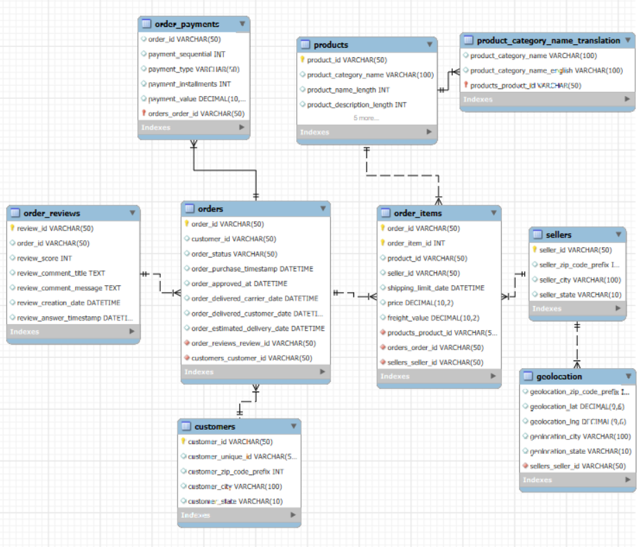
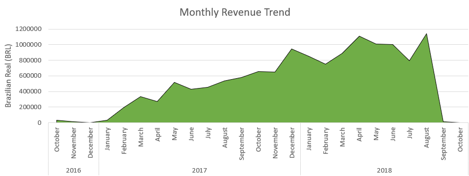

E-Commerce Project – Olist Brazilian Online Marketplace
Project Overview
I was excited to find a real-world e-commerce dataset with multiple relatable tables. I was bored of working on datasets that didn't return any value to my learning. I wanted to develop a project that hiring managers will see that I can do real-world analysis.
The Olist dataset is a very comprehensive public resource. It contains transactional data from a Brazilian online marketplace connecting small sellers to customers nationwide. This dataset spans September 2016 to October 2018. Its not a large dataset in terms of time, but there are over 90,000 orders to work with and over 32,000 products being sold by 3000 sellers.
Each table captures a different part of the retail lifecycle - from order creation, payments, processing and logistics. You can even track delays in delivery, not to mention cancellations. The reviews table can be used to observe seller performance.
All of this data will be used to analyze revenue trends, customer behaviour, product performance and lifecycle, delivery efficiency, cohort retention, drop-off and delivery funnel analysis, customer engagement and satisfaction and many more.
In this project, I will use MySQL to build a clean analytical model and solve these real-world E-Commerce challenges.
Dataset Schema
Below is the EER diagram showing the relationships and primary keys of each table. Each of the CSV documents were loaded into their own tables in a schema in MySQL and this diagram was created using reverse engineering in the software.

I then continued with data cleaning and validity checks.
- I ensured primary/foreign keys exist
- All tables date ranges (min, max) were verified - 2016 -> 2018
- 610 rows in products table were NULL for product_category_name, these were changed to a string value 'unknown'
- I used the translation table to translate all the product_category_name rows.
- Checked for duplicates - no duplicates detected
- All categorical text was standardized using lower and strip to remove any empty spaces.
- I created various flags to check:
- Unrealistically long delivery times
- Undelivered orders - filtering out created, invoiced, processing steps
- I added columns for:
- Volume of products for shipping
- Actual Delivery Days - the time it took to go from purchase to delivery to customer.
- Total Item Value = Value + Freight cost
- I created a new table - seller performance:
- Measuring the total orders and average review score
- Used to track seller performance
Next I will go through EDA steps to get to know more about this dataset.
How many unique orders, customers, sellers, and products are there?
- 99,441 unique orders
- 96,096 unique customers
- 3,095 unique sellers
- 32,951 unique products
The datasets time period starts 04 Sept 2016 and ends 17 Oct 2018, just over 2 years of transactional data.
Sales & Operations Performance
- Average cart size - 1.14 items
- Average cart value - 137.75 not including freight
- Average cart freight - 22.82
- Total number of items bought - 112,650
| Order Status | Total Orders | Perc of Total |
|---|---|---|
| delivered | 96,478 | 97.02% |
| unavailable | 609 | 0.61% |
| shipped | 1,107 | 1.11% |
| canceled | 625 | 0.63% |
| invoiced | 314 | 0.32% |
| processing | 301 | 0.30% |
| approved | 2 | 0.00% |
| created | 5 | 0.01% |
Above is the order status of all the orders with 97% of all orders with the status delivered. In this analysis, I will mostly be using the 'delivered' status to analyse the performance of the company. How many active sellers do we have?
- 2,970 sellers have sold atleast one product, leaving 125 sellers without a purchase.

Revenue rose steadily from 2016 to mid-2018, peaking around mid-year before dropping sharply - likely due to missing or incomplete data rather than actual decline.
Revenue and Payment Analysis
| Payment Method | Total Purchases | Perc of Total |
|---|---|---|
| credit_card | 76,795 | 73.92% |
| boleto | 19,784 | 19.04% |
| voucher | 5,775 | 5.56% |
| debit_card | 1,529 | 1.47% |
| not_defined | 3 | 0.00% |
- Credit card payments make up 74% of all payment, with Boleto coming second - Boleto is a popular payment method in Brazil - using barcodes to make payment.
- Not stated in this table - single payments makes up 95.6% of all orders, followed by 2 sequential payments with 2.9%.
Delivery and Logistics
The average delivery time from the order approval stage to the customer delivery stage took 12 days. How often are orders delivered late (delivered date > estimated date)?
- 6.84 % of deliveries were late
Is there a correlation between delivery delay and review score?
- I analyzed the review scores and below review scores categorized by orders with reviews.
- I calculated a Pearson correlation between the review scores and the delivery times and I got -0.27 which is due to a medium correlation so maybe this had more to do with quality of products or some other factor.
| Review Score | Total Orders with Reviews |
|---|---|
| 1 | 3,411 |
| 2 | 540 |
| 3 | 687 |
| 4 | 644 |
| 5 | 1,046 |
Customer Behavior
How many unique customers placed more than one order?
- 2,997 customers placed more than one order
What is the average time between first and second purchase?
- The average time between orders was 92 days
What is the average customer review score?
The ADV per customer:
- The AOV per customer is 125.98 BRL
Below are the top 5 cities with the highest revenue and orders:
| City | Orders | Total Revenue (BRL) |
|---|---|---|
| São Paulo | 17,146 | 1,836,014.38 |
| Rio de Janeiro | 7,487 | 943,285.23 |
| Belo Horizonte | 3,029 | 339,753.54 |
| Brasília | 2,398 | 288,942.45 |
| Curitiba | 1,700 | 303,404.59 |
Product Performance
Which categories have the highest sales volume and revenue?
| Product Category | Sales Volume | Total Revenue (BRL) |
|---|---|---|
| health_beauty | 9,299 | 1,211,683.81 |
| watches_gifts | 5,758 | 1,151,762.76 |
| bed_bath_table | 10,788 | 1,008,657.68 |
| sports_leisure | 8,336 | 944,482.97 |
| computers_accessories | 7,549 | 877,529.17 |
Executive Summary
The marketplace shows steady growth and strong logistics efficiency (97% delivered orders, 12-day average delivery). Customer satisfaction remains high despite moderate delivery delays. Credit cards dominate payments, and São Paulo leads in revenue. Heath & Beauty leads in sales volume and revenue. Future optimization lies in improving slow categories and supporting underperforming sellers.
Key Metrics
| Metric | Value | Description |
|---|---|---|
| Total Orders | 99,441 | Total transactions |
| Delivered Orders | 96,478 (97%) | Successful deliveries |
| Average Delivery Time | 12 days | From approval to customer |
| Late Deliveries | 6.84% | Beyond estimated date |
| AOV | 137.75 BRL | Excluding freight |
| Avg Cart Freight | 22.82 BRL | Avg shipping cost |
| Repeat Customers | 2,997 (3%) | Repeat buyers |
| Avg Time Between Orders | 80 days | Loyalty indicator |
| Avg Review Score | 4.09 | Overall satisfaction |
Business Insights
- Focus marketing on high-value cities (São Paulo, Rio de Janeiro).
- Investigate long-delivery sellers for performance improvement.
- Explore repeat-buyer incentives to increase retention.
- Continue promoting credit-card payments (fastest clearance).